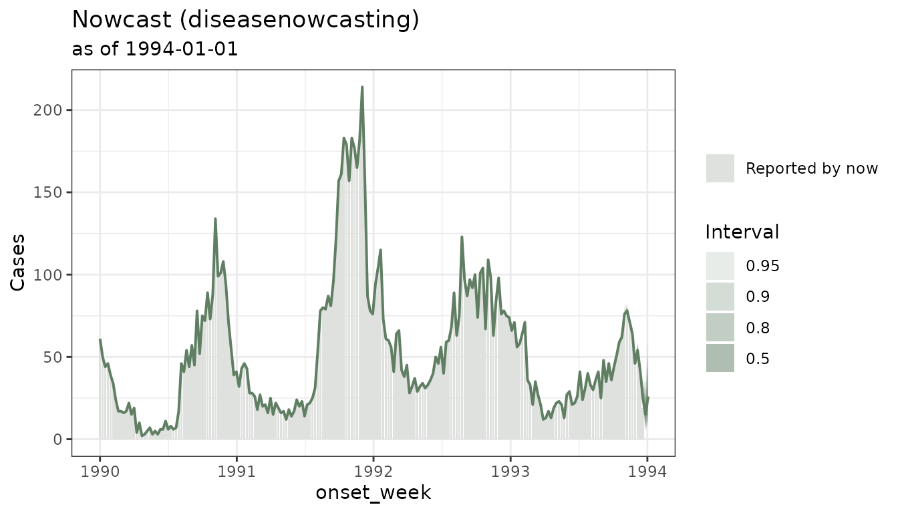
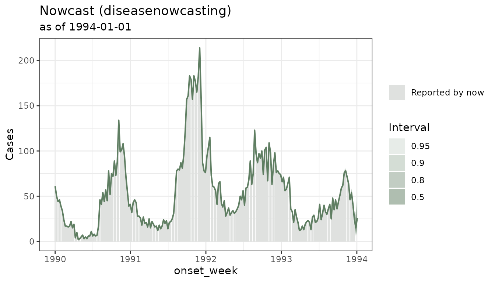

Introduction to diseasenowcasting: Real-Time Epidemic Nowcasting
diseasenowcasting team
Source:vignettes/introduction.Rmd
introduction.Rmddiseasenowcasting is an R package for nowcasting time
series of epidemiological cases. Epidemiologic surveillance tools
usually have an intrinsic delay between the true date of an
event (event_date) and the report date for
that event (report_date). Some examples include
the true date being symptom onset or testing time and the report date
corresponds to when the case was registered in the system.
diseasenowcasting uses censored Bayesian models (via R’s
Template Model Builder RTMB)
to infer the cases that have not yet been reported thus providing a
prediction of the final number of cases.
Native modelling and the shared workflow
Use diseasenowcasting’s native interface when specifying
the statistical model: model(), nowcast(), and
auto_nowcast() expose its epidemic, delay, likelihood,
revision, and cumulative-process choices. Use fit_check()
and nowcast_diagnostic() for diagnostics that are
specifically about the RTMB fit.
The returned object is already a tbl.now::tbl_nowcast.
Plotting, tidying, predictive scoring, ensembling, saving, and loading
therefore use the common result directly. Likewise,
backtest() is a convenience for translating native
model() specifications into tbl.now engines;
it returns a canonical nowcast_backtest, not a second
native backtest class. That result can be passed directly to the
scoringutils as_forecast_quantile(),
as_forecast_point(), or as_forecast_sample()
methods. See ?diseasenowcasting_workflows for the full
boundary and examples.
Your data: the tbl_now format
diseasenowcasting works with data organised as a
tbl_now object from the companion tbl.now
package. A tbl_now is simply a data frame that has been
annotated with the roles of its columns:
event date when the event happened (e.g. symptom onset)
report date when the event was reported (e.g. date entered into the database)
strata (optional) columns that defined all the strata (e.g. sex and region)
now (optional) the date until which to nowcast (assumes all events and reports before the now have been observed and missing observations correspond to no observations - i.e. if one day there were not cases the missingness can be translated into zero cases)
As a quick example, here is how to build a tbl_now using
the following surveillance data for dengue in Puerto Rico:
data(denguedat)#> onset_week report_week gender
#> 1 1990-01-01 1990-01-01 Male
#> 2 1990-01-01 1990-01-01 Female
#> 3 1990-01-01 1990-01-01 Female
#> 4 1990-01-01 1990-01-08 Female
#> 5 1990-01-01 1990-01-08 Male
#> 6 1990-01-01 1990-01-15 FemaleWe can transform the data.frame to a
tbl_now by specifying the event and report dates
(onset and report weeks respectively) as well
as the data_type and the strata (in this case,
gender).
dengue_tbl <- tbl_now(
denguedat,
event_date = onset_week, # symptom onset date
report_date = report_week, # when the record was reported
data_type = "linelist", # another option is "count-incidence" if data is aggregated
now = as.Date("1991-01-01") #When is the now of the nowcast
)
dengue_tbl
#> # A tibble: 52,987 × 6
#> # Data type: "linelist"
#> # Frequency: Event: `weeks` | Report: `weeks`
#> onset_week report_week gender .event_num .report_num .delay
#> <date> <date> <chr> <dbl> <dbl> <dbl>
#> [event_date] [report_date] [...] [...] [...] [...]
#> 1 1990-01-01 1990-01-01 Male 0 0 0
#> 2 1990-01-01 1990-01-01 Female 0 0 0
#> 3 1990-01-01 1990-01-01 Female 0 0 0
#> 4 1990-01-01 1990-01-08 Female 0 1 1
#> 5 1990-01-01 1990-01-08 Male 0 1 1
#> 6 1990-01-01 1990-01-15 Female 0 2 2
#> 7 1990-01-01 1990-01-15 Female 0 2 2
#> 8 1990-01-01 1990-01-15 Female 0 2 2
#> 9 1990-01-01 1990-01-22 Female 0 3 3
#> 10 1990-01-01 1990-01-08 Female 0 1 1
#> # ────────────────────────────────────────────────────────────────────────────────
#> # Now: 1991-01-01 | Event date: "onset_week" | Report date: "report_week"
#> # ────────────────────────────────────────────────────────────────────────────────
#> # ℹ 52,977 more rowsOnce your data is a tbl_now, a single call to
nowcast() does the rest.
For more information about
tbl_nowcheck the package’s website.
Example 1 – Dengue fever (setting up a stratified nowcast)
We fit a nowcast stratified by gender to illustrate the basic
workflow. First we add the column gender as strata to the
tbl_now:
dengue_tbl <- dengue_tbl |> add_strata(gender)Notice that the tbl_now automatically prints the
strata specification below:
dengue_tbl
#> # A tibble: 52,987 × 6
#> # Data type: "linelist"
#> # Frequency: Event: `weeks` | Report: `weeks`
#> onset_week report_week gender .event_num .report_num .delay
#> <date> <date> <chr> <dbl> <dbl> <dbl>
#> [event_date] [report_date] [strata] [...] [...] [...]
#> 1 1990-01-01 1990-01-01 Male 0 0 0
#> 2 1990-01-01 1990-01-01 Female 0 0 0
#> 3 1990-01-01 1990-01-01 Female 0 0 0
#> 4 1990-01-01 1990-01-08 Female 0 1 1
#> 5 1990-01-01 1990-01-08 Male 0 1 1
#> 6 1990-01-01 1990-01-15 Female 0 2 2
#> 7 1990-01-01 1990-01-15 Female 0 2 2
#> 8 1990-01-01 1990-01-15 Female 0 2 2
#> 9 1990-01-01 1990-01-22 Female 0 3 3
#> 10 1990-01-01 1990-01-08 Female 0 1 1
#> # ────────────────────────────────────────────────────────────────────────────────
#> # Now: 1991-01-01 | Event date: "onset_week" | Report date: "report_week"
#> # Strata: "gender"
#> # ────────────────────────────────────────────────────────────────────────────────
#> # ℹ 52,977 more rowsWe can also add temporal effects for example a weekly seasonality (52
seasons) as well as a holiday effect using the almanac
package:
library(almanac)
#Specify 52 seasons (weekly) and holidays from the US
t_effects <- temporal_effects(seasons = 52, holidays = cal_us_federal())
#Add the temporal effects
dengue_tbl <- dengue_tbl |>
add_temporal_effects(t_effects)Finally we fit the model:
nc_dengue <- nowcast(dengue_tbl)The fitted model can be visualized with autoplot(). Note
that the nowcast was already stratified by the strata specified in the
tbl_now:
autoplot(nc_dengue) 
Nowcast for dengue example. The shaded bars show the median while the errorbar has the 90% credible intervals.
Values can be obtained via predict() and
summary():
# Full posterior-predictive nowcast at every event-time
pred_dengue <- predict(nc_dengue)
#This creates a summary of mean and quantiles
summary(pred_dengue) #> mean median sd mad q2.5 q5 q10 q25 q50 q75 q90 q95
#> 154 108.6180 108 1.515990 1.4826 107 107 107 108 108 109 111 111.00
#> 155 89.1175 89 2.426239 1.4826 86 86 87 87 89 90 92 93.00
#> 156 68.2195 67 4.286083 2.9652 63 63 64 65 67 70 73 76.00
#> 157 45.5855 44 7.797056 5.9304 36 37 38 41 44 49 55 58.05
#> 158 40.4260 37 14.853681 10.3782 24 25 27 31 37 46 57 63.05
#> 159 36.3720 32 18.817696 14.8260 12 14 17 24 32 44 59 70.00
#> q97.5 .event_num stratum event_date
#> 154 112.000 47 Total 1990-11-26
#> 155 95.000 48 Total 1990-12-03
#> 156 78.025 49 Total 1990-12-10
#> 157 64.000 50 Total 1990-12-17
#> 158 71.000 51 Total 1990-12-24
#> 159 80.000 52 Total 1990-12-31Additionally the nowcast_diagnostic() shows the fitted
distribution for the delay, the smoothed epidemic process as well as the
aggregated nowcast (for the sum of all strata):
nowcast_diagnostic(nc_dengue) 
Example 2 – Mpox (modifying the nowcast model)
The mpoxdat dataset (also in tbl.now)
covers the 2022 mpox outbreak in New York City with daily case counts
stratified by race.
data(mpoxdat)
mpox_tbl <- tbl_now(
mpoxdat,
event_date = dx_date,
report_date = dx_report_date,
case_count = n,
data_type = "count-incidence",
now = as.Date("2022-08-15")
) A simple plot of the data shows that we should be taking into account day-of-the-week effects:
autoplot(mpox_tbl)
We can also set it again with
add_temporal_effects():
mpox_tbl <- mpox_tbl |>
add_temporal_effects(temporal_effects(day_of_week = TRUE))You can see that the tbl_now indicates its
computation:
#> # A tibble: 1,417 × 7
#> # Data type: "count-incidence"
#> # Frequency: Event: `days` | Report: `days`
#> dx_date dx_report_date race n .event_num .report_num .delay
#> <date> <date> <chr> <int> <dbl> <dbl> <dbl>
#> [event_date] [report_date] [...] [cas… [...] [...] [...]
#> 1 2022-07-08 2022-07-12 Asian 4 0 4 4
#> 2 2022-07-08 2022-07-12 Black 6 0 4 4
#> 3 2022-07-08 2022-07-12 Hispanic 6 0 4 4
#> 4 2022-07-08 2022-07-12 Non-Hispanic… 6 0 4 4
#> 5 2022-07-08 2022-07-13 Asian 2 0 5 5
#> 6 2022-07-08 2022-07-13 Black 3 0 5 5
#> 7 2022-07-08 2022-07-13 Hispanic 8 0 5 5
#> 8 2022-07-08 2022-07-13 Non-Hispanic… 5 0 5 5
#> 9 2022-07-08 2022-07-14 Black 1 0 6 6
#> 10 2022-07-08 2022-07-14 Hispanic 3 0 6 6
#> # ────────────────────────────────────────────────────────────────────────────────
#> # Now: 2022-08-15 | Event date: "dx_date" | Report date: "dx_report_date"
#> # T. effects (lazy): [event_date] day_of_week
#> # ────────────────────────────────────────────────────────────────────────────────
#> # ℹ 1,407 more rowsOne can also choose between several likelihoods, epidemic processess
and delay distributions and feed it into the model(). Here
we use a Susceptible-Infected-Recovered model (SIR) with a delay that
follows a lognormal distribution:
#Models can be modified via the model()
mpox_model <- model(likelihood = nb_likelihood(), #Negative binomial
epidemic = sir_epidemic(), #SIR model
delay = lognormal_delay()) #Delay distribution
#We can then fit the model
nc_mpox <- nowcast(mpox_tbl, model = mpox_model)
#And show the nowcast
autoplot(nc_mpox) 
Example 3 – Comparing models with a backtest
A backtest reruns nowcasts at multiple historical dates and scores them against the eventually-observed totals. This lets you compare between models before committing to one for real-time monitoring.
The
backtest()function fits one nowcast perdateandmodelcell. Those cells run in parallel through the future framework.
By default they run sequentially; to use several CPU cores, set a parallel plan before callingbacktest():
library(future)
plan(multisession, workers = 4) # 4 parallel R sessions
# ... run backtest() ...
plan(sequential) # restore serial execution when doneIn what follows we run a backtest in sequential mode however we strongly recommend using as many workers in a multisession plan as possible:
# Compare HSGP (flexible GP trend) vs AR1 (autoregressive trend)
# and SIR (susceptible, infected, recovered) on mpox
models_to_compare <- list(
model(nb_likelihood(), hsgp_epidemic(), lognormal_delay()),
model(nb_likelihood(), ar1_epidemic(), lognormal_delay()),
model(nb_likelihood(), sir_epidemic(), lognormal_delay())
)
#Uncomment this line to use several of your cores
#plan(multisession, workers = 4)
backtest_mpox <- backtest(
mpox_tbl,
models = models_to_compare,
dates = seq(as.Date("2022-07-18"), as.Date("2022-08-15"), by = "week")
)
#This closes the plan multisession opened above
#plan(sequential) The backtest is already in the common tbl.now format.
Convert it directly to a scoringutils quantile forecast and compute any
supported metrics:
backtest_scores <- backtest_mpox |>
scoringutils::as_forecast_quantile() |>
scoringutils::score()
relative_scores <- backtest_scores |>
scoringutils::add_relative_skill(metric = "wis") |>
scoringutils::summarise_scores(by = "model")
relative_scores
#> Key: <model>
#> model wis overprediction underprediction dispersion bias
#> <char> <num> <num> <num> <num> <num>
#> 1: AR1/nb/LogNormal 3.574333 0.07555556 1.953067 1.545711 -0.5036
#> 2: HSGP/nb/LogNormal 4.707104 0.31093333 2.534133 1.862038 -0.5088
#> 3: SIR/nb/LogNormal 4.251703 0.02311111 3.079600 1.148992 -0.5408
#> interval_coverage_50 interval_coverage_90 ae_median wis_relative_skill
#> <num> <num> <num> <num>
#> 1: 0.472 0.736 8.120 0.8610422
#> 2: 0.424 0.744 10.360 1.1339221
#> 3: 0.424 0.696 9.408 1.0242178The scoringutils output includes WIS and its decomposition, median absolute error, interval coverage, and relative WIS. A well-calibrated nowcast should have low WIS and coverage close to the nominal levels.
In this specific test we would choose the SIR for having the lowest WIS at essentially the same coverage as HSGP. Note however that for the tutorial we only used 5 historical dates which is too low to reach a definite conslusion.
When a report is not yet a case: the revision process
Everything so far assumes a report is a case. Many registers work provisionally instead: a report arrives, and is later resolved — confirmed by a laboratory result, or retracted when it turns out not to be a case at all.
Record that on the tbl_now and
diseasenowcasting nowcasts the number that actually settles
rather than the raw report count. There is no argument to pass: the
process is detected from the data.
# One date, plus what the result was: "confirmed", "retracted" or "pending".
dat <- tbl_now(linelist, event_date = onset, report_date = reported,
revision_date = result, revision_type = outcome,
data_type = "linelist")
nowcast(dat) # works out for itself which outcomes you recordWhether you record only retractions, only confirmations, or both, is
read from the values in revision_type — and the answer
targets, respectively, the cases never retracted, the cases eventually
confirmed, or the cases whose result comes back positive.
The key point, and the reason this is not just “multiply by the confirmed fraction”: a missing resolution date means not resolved yet, not “fine”. A report filed this morning has had no chance to be retracted; one filed two months ago and still standing is almost certainly genuine. The model weighs every report by how long it has had to be contradicted, so recent event times — exactly the ones you care about — are corrected properly.
nowcast() prints what it is modelling and the fitted
probability, and parameters() gives its uncertainty
(tidy() on a nowcast gives you the predicted counts
instead):
parameters(nc) |> filter(type == "resolution")
#> term estimate conf.low conf.high type
#> prob_not_retracted 0.8512 0.8399 0.8619 resolutionSee vignette("Revision_processes") for the full
treatment, including per-stratum probabilities, censored revision dates,
count-incidence data, and the shared revision-delay assumption used when
both outcomes are recorded.
Example 4 – Letting the package choose the model
(auto_nowcast())
Doing the backtest-and-compare loop by hand (Example 3) is exactly
what auto_nowcast() automates. Given a
tbl_now, it builds a grid of candidate models sized to
how much data you have (which epidemic processes are even feasible,
crossed with the delay families), backtests them, scores them, and
refits the single best one on the full data. The result
is an ordinary nowcast, with the ranked comparison stored alongside
it.
Here we use all the dengue data up to 1994:
#All dengue observed as of January 1994
dengue_94 <- denguedat |>
filter(onset_week <= as.Date("1994-01-01") &
report_week <= as.Date("1994-01-01"))
dengue_tbl_94 <- tbl_now(
dengue_94,
event_date = onset_week,
report_date = report_week,
data_type = "linelist",
now = as.Date("1994-01-01")
)Backtesting the whole grid is the expensive step. To run the
candidates in parallel, set a future::plan() before the
call and restore it afterwards (left commented here so the vignette
stays single-process):
# Uncomment to run candidates in parallel:
# library(future)
# plan(multisession, workers = max(parallel::detectCores() - 1, 1))
auto_ncast <- auto_nowcast(
dengue_tbl_94,
metric = "wis", # rank candidates by relative WIS (the default)
relative_score = TRUE,
n_dates = 10, # backtest at 10 historical dates (raise for a firmer choice)
n_draws_select = 150, # draws while comparing (small => fast)
n_draws = 500, # draws for the final fit of the winner
K = 8 # delay imputations (small => fast)
)
# plan(sequential)We can show the scores of the models to see the best performer:
comparison_scores(auto_ncast) # every candidate, ranked best-first
#> # A tibble: 9 × 16
#> model wis overprediction underprediction dispersion bias
#> <chr> <dbl> <dbl> <dbl> <dbl> <dbl>
#> 1 HSGP/nb/Dirichlet 0.0729 0.00585 0.0277 0.0394 -0.00384
#> 2 HSGP/nb/LogNormal 0.0729 0.00418 0.0295 0.0393 -0.0102
#> 3 HSGP/nb/Generalized… 0.0755 0.00446 0.0302 0.0409 -0.00853
#> 4 AR1/nb/LogNormal 0.139 0.0454 0.00443 0.0894 0.00783
#> 5 AR1/nb/Dirichlet 0.144 0.0503 0.00107 0.0924 0.0183
#> 6 AR1/nb/GeneralizedG… 0.144 0.0479 0.00442 0.0919 0.00943
#> 7 SIR/nb/GeneralizedG… 0.279 0 0.256 0.0237 -0.0305
#> 8 SIR/nb/Dirichlet 0.294 0 0.274 0.0195 -0.0293
#> 9 SIR/nb/LogNormal 0.295 0 0.276 0.0186 -0.0312
#> # ℹ 10 more variables: interval_coverage_50 <dbl>, interval_coverage_90 <dbl>,
#> # ae_median <dbl>, wis_relative_skill <dbl>, median_fit_seconds <dbl>,
#> # total_fit_seconds <dbl>, successful_fits <int>, epidemic_priority <int>,
#> # grid_order <int>, selection_score <dbl>
selection_timings(auto_ncast) # retrospective fits, refits, and total seconds
#> $backtest
#> # A tibble: 90 × 5
#> .method .now elapsed_seconds success error
#> <chr> <date> <dbl> <lgl> <chr>
#> 1 SIR/nb/LogNormal 1993-09-27 5.40 TRUE NA
#> 2 SIR/nb/GeneralizedGamma 1993-09-27 11.7 TRUE NA
#> 3 SIR/nb/Dirichlet 1993-09-27 2.13 TRUE NA
#> 4 AR1/nb/LogNormal 1993-09-27 2.97 TRUE NA
#> 5 AR1/nb/GeneralizedGamma 1993-09-27 8.93 TRUE NA
#> 6 AR1/nb/Dirichlet 1993-09-27 1.56 TRUE NA
#> 7 HSGP/nb/LogNormal 1993-09-27 3.59 TRUE NA
#> 8 HSGP/nb/GeneralizedGamma 1993-09-27 14.1 TRUE NA
#> 9 HSGP/nb/Dirichlet 1993-09-27 1.24 TRUE NA
#> 10 SIR/nb/LogNormal 1993-10-04 5.39 TRUE NA
#> # ℹ 80 more rows
#>
#> $refit
#> # A tibble: 1 × 4
#> model elapsed_seconds success error
#> <chr> <dbl> <lgl> <chr>
#> 1 HSGP/nb/Dirichlet 1.82 TRUE NA
#>
#> $total_seconds
#> [1] 560.586best_model() hands back the winning model()
object, so you can reuse the same specification on other data (or feed
it to nowcast() / backtest()):
winner <- best_model(auto_ncast)
winnerBecause the result is a normal nowcast, everything else just works:
autoplot(auto_ncast)
Nowcast from the model auto_nowcast() selected.
Updating the chosen model as new data arrive
The selected nowcast is an ordinary nowcast_class, so
once auto_nowcast() has picked a model you keep it and feed
it the next batch of reports with update() – no need to
re-run the selection. update() warm-refits the
same winning model and scores the incoming reports against the
fitted delay, warning if any arrive far later than expected:
# A few more weeks of dengue, observed as of 1994-04-01:
dengue_apr <- denguedat |>
filter(onset_week <= as.Date("1994-04-01") &
report_week <= as.Date("1994-04-01"))
dengue_tbl_apr <- tbl_now(
dengue_apr,
event_date = onset_week,
report_date = report_week,
data_type = "linelist",
now = as.Date("1994-04-01")
)
auto_ncast_updated <- update(auto_ncast, dengue_tbl_apr)
#> Warning: ! Surprising reporting delay of 11 weeks (1 report): longer than the model
#> expects (P(D >= d) = 0.0095).
#> ℹ If these are outliers, treat them as censored with
#> `tbl.now::censor_reporting_delays_above()` and re-fit.
#> ℹ See all flagged delays with `extreme_values(nc)`.Any reports with surprising delays are collected by
extreme_values() (it returns NULL when nothing
looks off):
extreme_values(auto_ncast_updated)
#> delay weight mean_tail_prob cdf_prob lpd relative_surprise direction
#> 1 11 1 0.009547 0.990453 -6.2334 0.0042 long
#> surprise level
#> 1 delay 0.99See the vignette on Handling Outlier Delays with Censoring for what to do when a delay is flagged.
Example 5 – Count-cumulative revisions and a historical origin
FluSight publishes a running level for each target week. Keep three
dates distinct: full_data is the retrospective extract used
only to obtain scoring truth; historical_now is the
information cutoff; and event_date identifies the weeks
being nowcast. Starting near September 2023 avoids interpreting the
between-season gap as a reporting delay.
data(flusight, package = "tbl.now")
historical_now <- as.Date("2024-01-27")
full_data <- flusight |>
filter(location_name == "California",
target_end_date >= as.Date("2023-09-01"))
calendar_tbl <- tbl_now(
full_data,
event_date = target_end_date,
report_date = as_of,
case_count = observation,
data_type = "count-cumulative",
event_units = "weeks", report_units = "weeks",
now = max(full_data$as_of), verbose = FALSE
)
calendar_rows <- full_data |>
filter(target_end_date <= historical_now, as_of <= historical_now)
calendar_asof <- tbl_now(
calendar_rows,
event_date = target_end_date, report_date = as_of,
case_count = observation, data_type = "count-cumulative",
event_units = "weeks", report_units = "weeks",
now = historical_now, verbose = FALSE
) |>
tbl.now::complete_zeroes(max_delay = 26L, until = historical_now)
stopifnot(max(calendar_asof$target_end_date) <= historical_now,
max(calendar_asof$as_of) <= historical_now)The calendar clock keeps every intervening calendar
week, and zero completion makes missing cells inside the observable
triangle explicit. For the compressed publication
clock, map the observed publication weeks to consecutive
synthetic weeks before constructing the tbl_now; retain the
real dates in separate columns for the as-of filter and scoring
join.
publication_weeks <- sort(unique(full_data$as_of))
publication_index <- setNames(seq_along(publication_weeks) - 1L,
as.character(publication_weeks))
compressed_data <- full_data |>
filter(target_end_date %in% publication_weeks) |>
mutate(event_num = publication_index[as.character(target_end_date)],
report_num = publication_index[as.character(as_of)],
event_model = as.Date("2000-01-01") + 7L * event_num,
report_model = as.Date("2000-01-01") + 7L * report_num)
compressed_tbl <- tbl_now(
compressed_data, event_date = event_model, report_date = report_model,
case_count = observation, data_type = "count-cumulative",
event_units = "weeks", report_units = "weeks", verbose = FALSE
)
# The final publication of one season is immediately followed by the first of
# the next on this model clock; the original dates still enforce historical_now.Count-cumulative data use their own component.
settlement = 26L targets C_t(26), finite-horizon database retention.
The cumulative-level model and the two signed hurdle models share the
same collapsed retraction kernel; the zero-truncated Poisson magnitude
has no dispersion parameter.
level_model <- model(
nb_likelihood(), ar1_epidemic(), lognormal_delay(),
cumulative = cumulative_process(
observation = "cumulative", settlement = 26L
)
)
ztnb_model <- model(
nb_likelihood(), ar1_epidemic(), lognormal_delay(),
cumulative = cumulative_process(
observation = "hurdle_ztnb", settlement = 26L
)
)
ztp_model <- model(
poisson_likelihood(), ar1_epidemic(), lognormal_delay(),
cumulative = cumulative_process(
observation = "hurdle_ztpoisson", settlement = 26L
)
)
calendar_fits <- lapply(
list(level = level_model, ztnb = ztnb_model, ztp = ztp_model),
nowcast, data = calendar_tbl, now = historical_now,
temporal_effects = "none"
)An empirical multiplier is a development comparator, not part of the
fitted model. At target age a,
calibrate it only on earlier cohorts for which both C_s(a) and C_s(26) were observable by
historical_now; discard zero denominators and report a
fallback when too few pairs remain. Retrospective terminal values after
historical_now may be used for scoring, never for this
calibration. See
devel/skellam_prototypes/flusight_asof_data.R for the
complete calendar/compressed preparation and leakage-safe multiplier
used by the large backtest runner.
Saving and loading a fitted nowcast
Fitting can take a while, so you will often want to
save a fitted nowcast and reload it later – in a
report, a dashboard, or a scheduled job – instead of re-fitting.
save_nowcast() writes it to a single .rds file
and load_nowcast() brings it back.
The autodiff engine (RTMB) cannot itself be written to
disk, so what is stored is everything needed to reuse the fit:
the model() specification, the input tbl_now,
and each fit’s parameters together with its Laplace mode and precision.
That is all predict() needs, so a reloaded nowcast behaves
exactly like the original (any number of draws, no re-fitting):
saved <- tempfile(fileext = ".rds")
save_nowcast(auto_ncast, saved)
restored <- load_nowcast(saved)
# predict() / autoplot() / coef() / parameters() all work just as before:
autoplot(restored)
Because the input data travels in the bundle, you can also re-fit the saved model later (on the original data, or on a newer extract):
nowcast(restored@data, restored@model) # re-runs the optimisationNext steps
This vignette covered the basics: building a tbl_now,
fitting a nowcast with nowcast(), inspecting results with
predict() / summary() /
autoplot(), and comparing models with
backtest() / score().
Depending on what you want to do next, check out the following vignettes:
Nowcasting at the Start of an Epidemic — A worked, end-to-end case study of monitoring an outbreak in real time: choosing a model when data are scarce, reading the nowcast as the epidemic grows, and experimenting with the prior to encode what you already believe about the epidemic before much data arrives.
Understanding Priors in diseasenowcasting — Make the model say what you mean. Shows the package’s default priors, how to tighten or loosen them, and how the prior trades off against the data. Uses the prior-predictive tools (
nowcast(..., prior_only = TRUE)) to see what a prior implies before fitting.Custom delays and epidemic processes — Two examples on how to set your own delays and epidemic processes. Includes how to use ordinary differential equation models.
Handling Outlier Delays with Censoring — Robustness to reporting glitches. How the censored likelihood copes with unusually long reporting delays, and how to flag extreme delays in your surveillance stream.
Using alongside an LLM — Use AI. How to use the
SKILL.mdto teach a Large Language Model how to you develop your nowcasts withdiseasenowcasting.Benchmark (diseasenowcasting vs NobBS and epinowcast) — How does it compare? A reproducible backtest comparing
diseasenowcastingagainst theNobBSandepinowcastpackages.Mathematical Foundations of diseasenowcasting — Under the hood. The censored likelihood, the epidemic processes (HSGP, AR(1), SIR), the delay families, and the Laplace-approximation inference that powers
RTMB.
See ?nowcast, ?backtest,
?score, and ?model for full documentation.